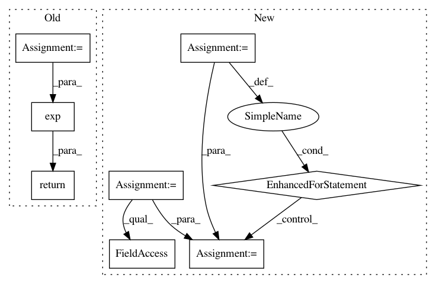

0d10b42c1fb6b7ab65b38286292006cad2fe3531,dipy/tracking/life.py,,sl_signal,#Any#Any#Any#,95
Before Change
// Preallocate:
sph = dps.Sphere(xyz=gtab.bvecs)
ADC = apparent_diffusion_coef(tens, sph)
// Use the Stejskal-Tanner equation with the ADC as input, with S0 = 1:
return np.exp(ADC)
class Fiber(ResetMixin):
After Change
tensors = sl_tensors(sl, evals)
sig = np.empty((len(sl), np.sum(~gtab.b0s_mask)))
// Extract them once:
bvecs = gtab.bvecs[~gtab.b0s_mask]
bvals = gtab.bvals[~gtab.b0s_mask]
for ii, tensor in enumerate(tensors):
ADC = np.diag(np.dot(np.dot(bvecs, tensor), bvecs.T))
// Use the Stejskal-Tanner equation with the ADC as input, and S0 = 1:
sig[ii] = np.exp(-bvals * ADC)
return sig
def voxel2fiber(sl, affine):
In pattern: SUPERPATTERN
Frequency: 3
Non-data size: 8
Instances
Project Name: nipy/dipy
Commit Name: 0d10b42c1fb6b7ab65b38286292006cad2fe3531
Time: 2014-12-08
Author: arokem@gmail.com
File Name: dipy/tracking/life.py
Class Name:
Method Name: sl_signal
Project Name: pytorch/examples
Commit Name: 8a70c277c355fe734a01fe58baafdc2dc5164205
Time: 2016-12-29
Author: alerer@fb.com
File Name: OpenNMT/train.py
Class Name:
Method Name: eval